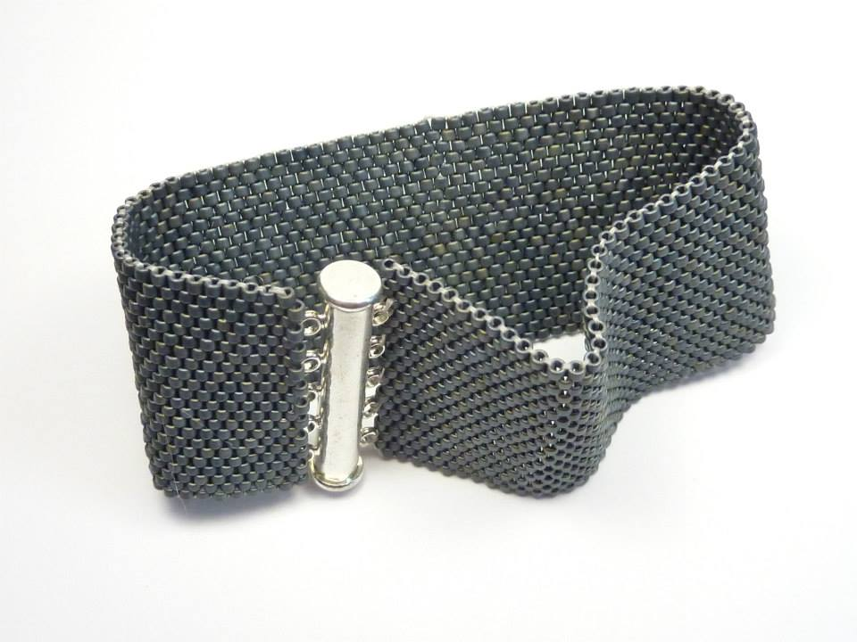
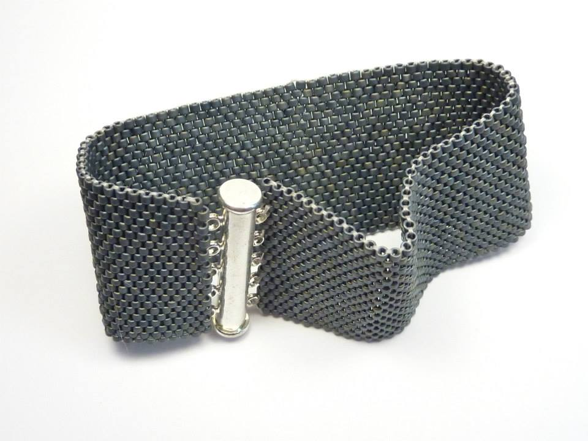

O mně
Jmenuji se Magdalena Stránská a kromě jiných zájmů ráda tvořím. Věnuji se:
- šití,
- tvoření z korálků a dalších materiálů,
- výrobě výzdoby,
- focení,
- občas malování,
- dalším kreativním technikám.
V současné době se pokouším naučit se vytvářet webové stránky a časem bych také ráda zvládla focení.
Tvoření mi poskytuje odreagování, klid, únik, seberealizaci, vyčištění myšlenek..chvíle pro sebe.
Šití a tvorba střihů
Již několik let se pokouším šít, a to různé doplňky do domácnosti jako polštáře a ubrusy, kabelky a tašky, a v poslední době převážně oblečení.


Dlouho jsem šila podle hotových střihů z časopisů jako je Burda a Ottobre, nebo střihů zakoupených od různých českých i zahraničních tvůrců.
Jako většina populace nemám zcela konfekční postavu, a hlavně nerada slepě následuji pokyny které nechápu. Rozhodla jsem se tedy pokusit se pochopit princip tvorby střihů.
V roce 2023 jsem se přihlásila do prvního kurzu konstrukce střihů. Aktuálně procházím již třetím kurzem a k mé radosti se (velmi pomalu) posouvám dále.
Korálkování
Korálkování (tvorbu šperků ze skleněných korálků, minerálů, lávy atp.) jsem objevila náhodně, když jsem uviděla na dveřích obchodu s kreativními potřebami leták s kurzem šitého korálkového šperku.
Korálkování se věnuji již cca 10 let, v průběhu kterých jsem se naučila či zkusila mnoho technik korálkování a vytvořila spoustu krásných šperků.
Hlavně mi ale díky korálkovaní vstoupilo do života pět úžasných žen - přítelkyň, se kterými se téměř pravidelně nad korálky potkávám.
 

Tvoření všeho druhu
Málokdy se mi podaří odolat když objevím nějakou novou kreativní techniku - dříve či později ji chci vyzkoušet..

Focení
Co se focení týká, jsem zatím začátečník. Lákají mě ruzné fotodisciplíny, nejvíce makro fotografie a portrétní fotografie.


Kontakt

V případě zájmu o sdílení nápadů, námětů, postupů, pokud víš o nějakém zajímavém kurzu (či chceš kurz uspořádat) nebo si chceš jen popovídat o tvoření všeho druhu, ozvi se mi na
e-mail nebo na
Facebooku.
Magdalena Stránská
Platanová 13
Hvězda nad Lesem
213 21
E-mail: radatvorim@gmail.com
Mobil: +420 987 654 321